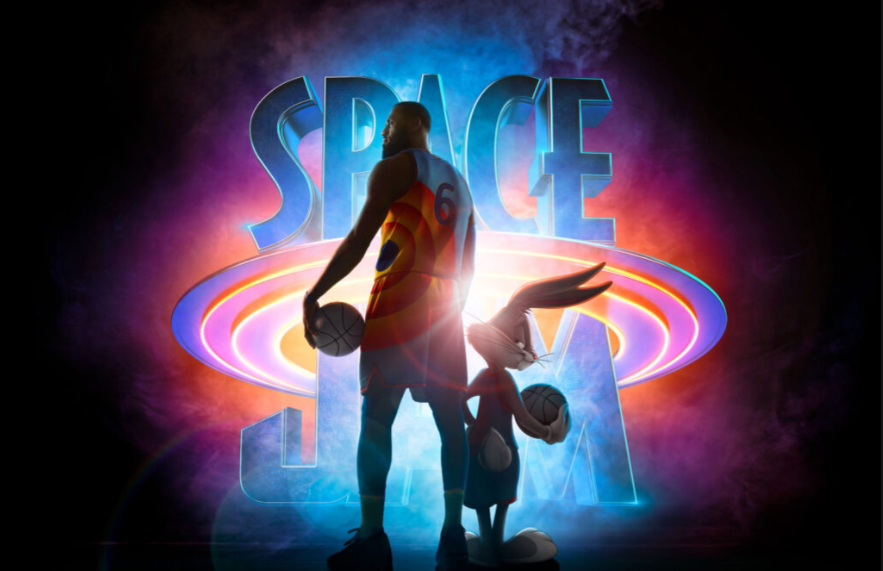

Argentina, 1985
Protagonizada por Ricardo Darín y Peter Lanzani, narra uno de los momentos más trascendentes de la democracia post-dictadura militar.


Protagonizada por Ricardo Darín y Peter Lanzani, narra uno de los momentos más trascendentes de la democracia post-dictadura militar.
A 36 años del estreno de la original, Tom Cruise regresa con Top Gun: Maverick. ¿El tiempo le juega a favor a la secuela?

Doctor Strange regresa una vez más a la pantalla grande, en la que, aunque no lo parezca, es su segunda película en solitario.

Con muchos guiños y escenas de acción bien implementadas, Uncharted: Fuera del Mapa abraza a los fanáticos pero también le abre la puerta al resto del público.
La locura en torno a la última entrega cinematográfica de Spider-Man ha llegado a niveles insospechados ¿Puede acaso No Way Home estar a la altura del hype?
5 años después llega Space Jam: Una Nueva Era, secuela que esta vez cuenta con LeBron James. ¿Cómo se compara con la original?
¡Get over here! Llega a la pantalla grande una nueva versión de Mortal Kombat, dirigida por Simon McQuoid.